2026.11.13 발표
브랜드명 후보 비교와 기본 라인
대구 약전골목 한방 뷰티 · 1순위 차하르(가칭) · 2순위 청향
브랜드명 후보 비교
01 · 차하르 CHAHAR
페르시아어 chahār(넷)에서 착안해 봄·여름·가을·겨울의 피부 관리로 연결합니다.
계절을 읽고,
피부를 돌보다.
02 · 청향 淸香
“청향(淸香)은 잔에 지고, 낙홍(落紅)은 옷새 진다”
화창한 봄바람이 문득 불어 푸른 들을 건너 오니, 맑은 향기는 술잔에 지고, 붉은 꽃잎은 옷에 떨어진다.
— 정극인, 《상춘곡(賞春曲)》 · 조선 전기 가사
대구 약전골목을 지나오는 바람과 향
흩날리는 작약 꽃잎 한 장
세럼 병에 담기는 자연의 장면
이름 선택 후 변경할 부분
기본 라인의 공통 포인트는 단지
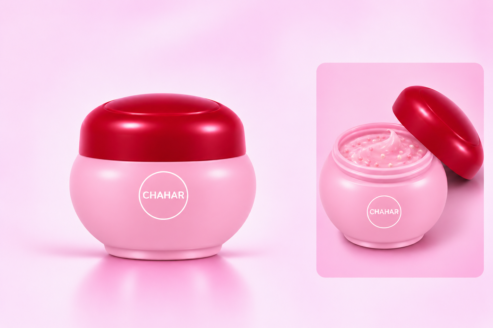
디자인 의도 · 실제 제작 사양이 아닌 AI 생성 패키지 초안입니다
기본 라인 한눈에 보기
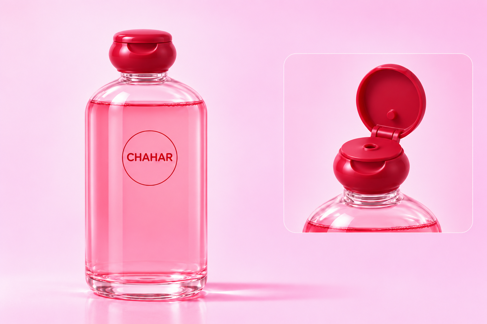
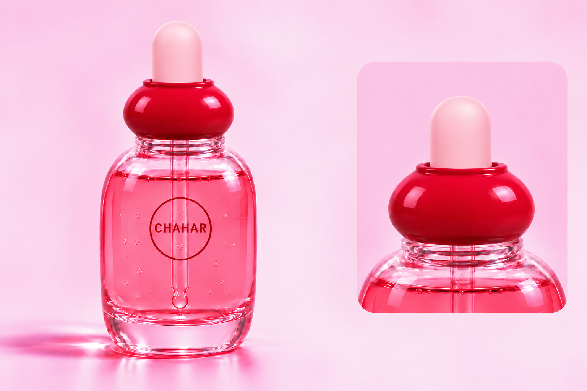
기본 라인 한눈에 보기
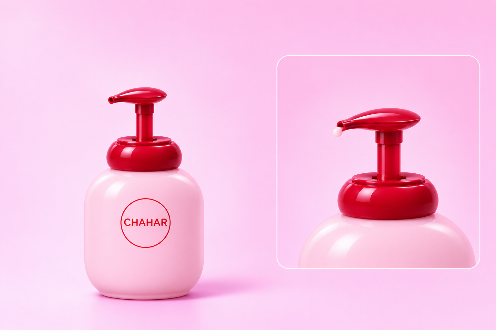
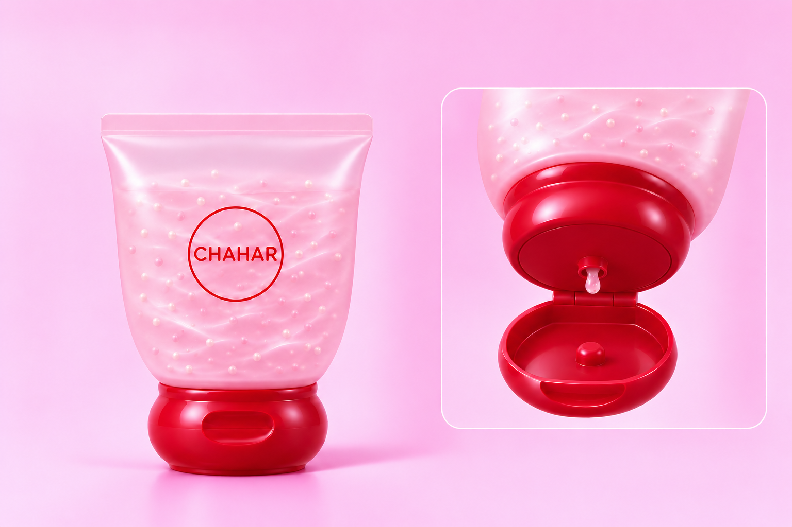
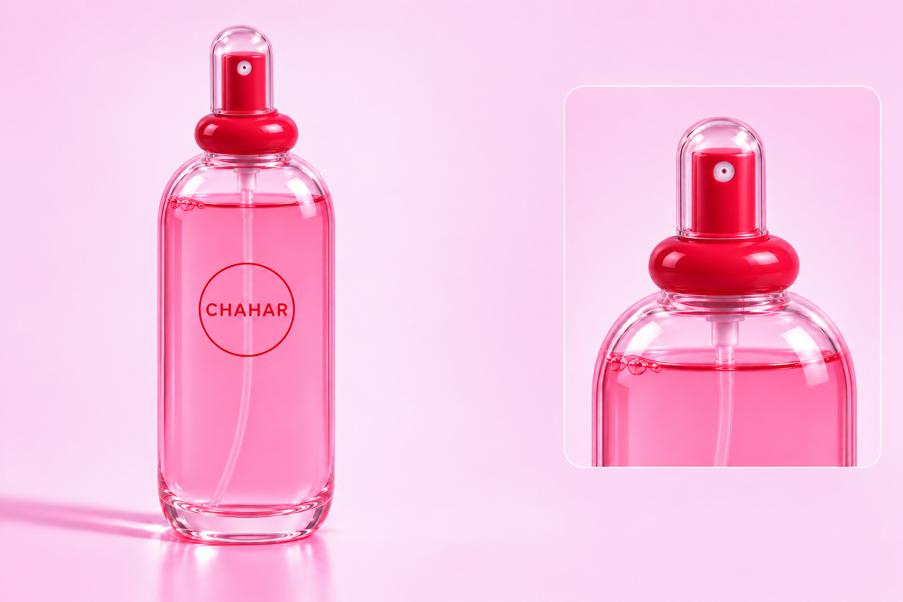
단지 디테일 모음
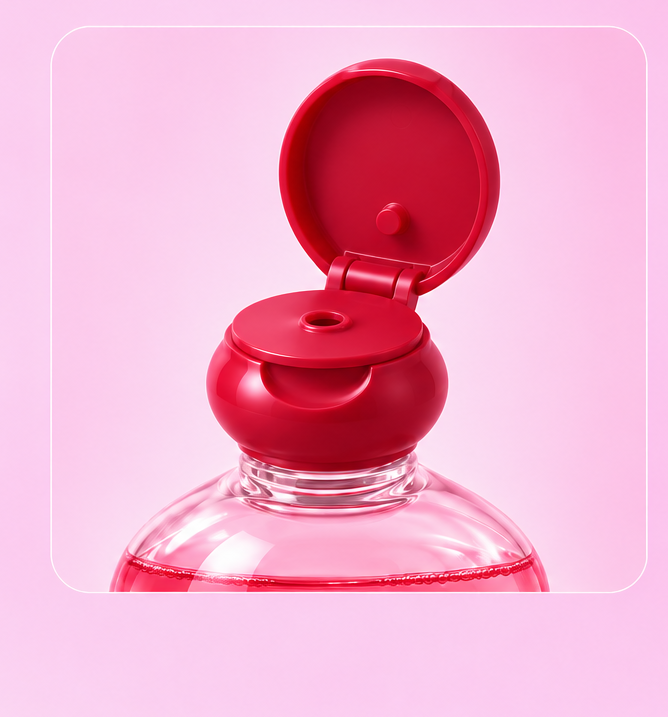
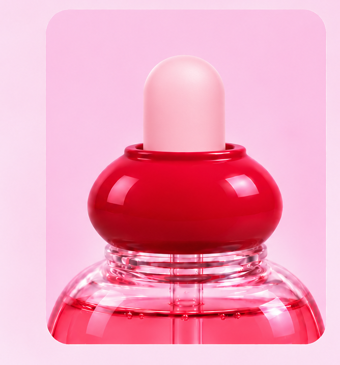
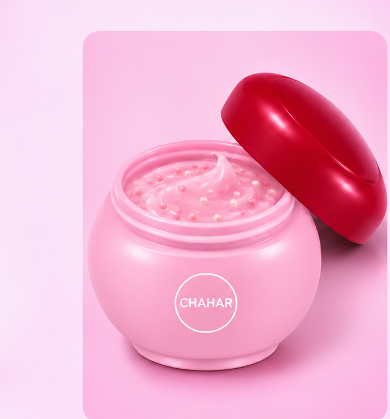
단지 디테일 모음
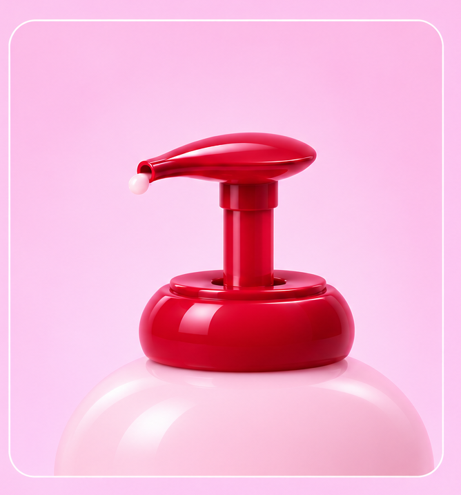
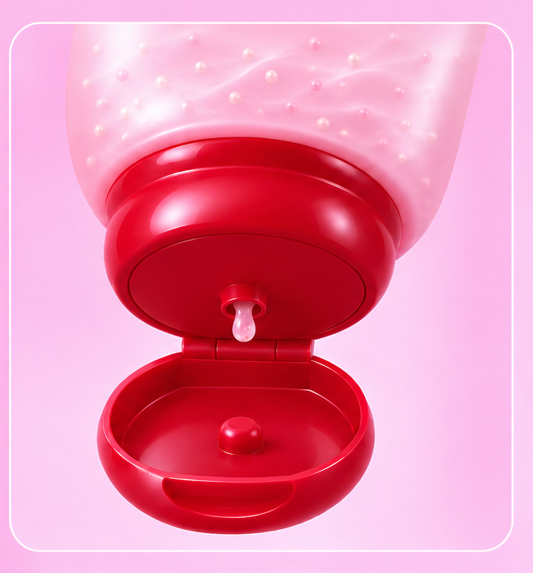
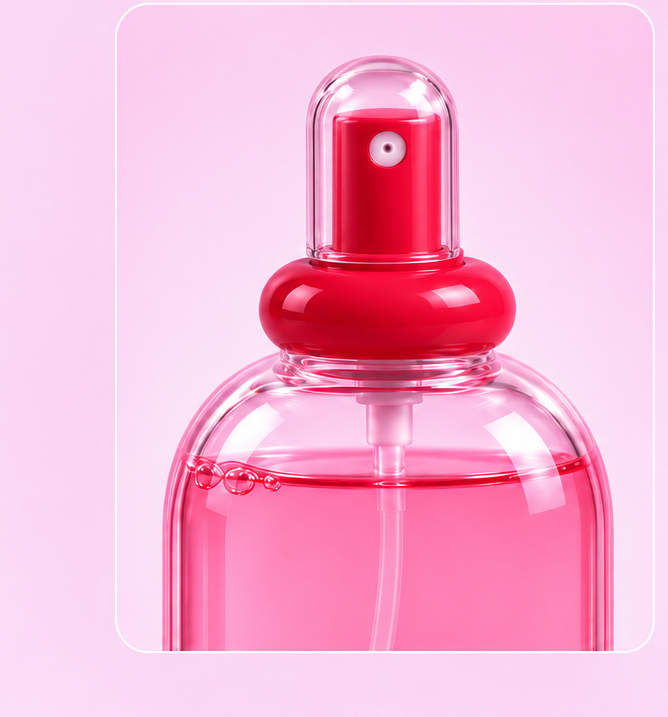
상품기획자의 유저플로우
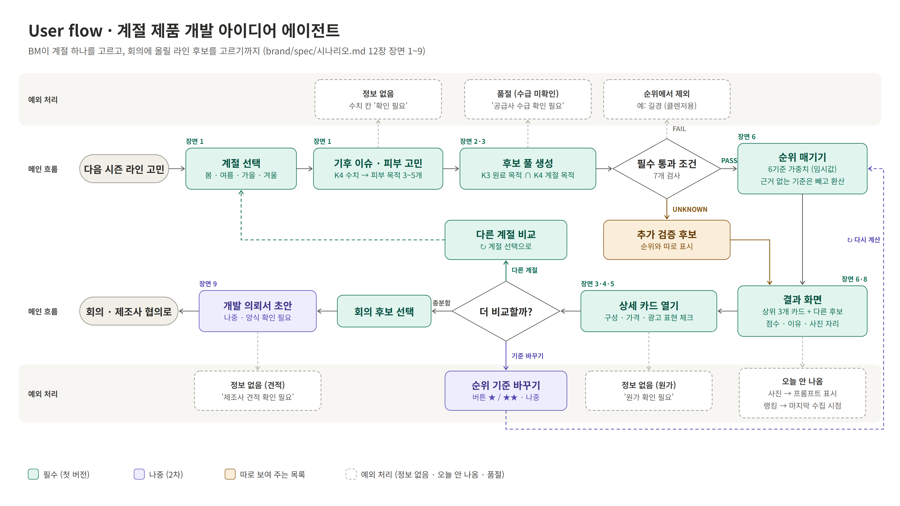
시연
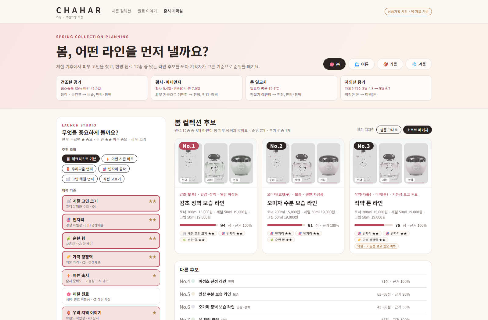
시연 파일은 브라우저에서 HTML을 직접 열어 확인합니다.
원료별 패키지 색감
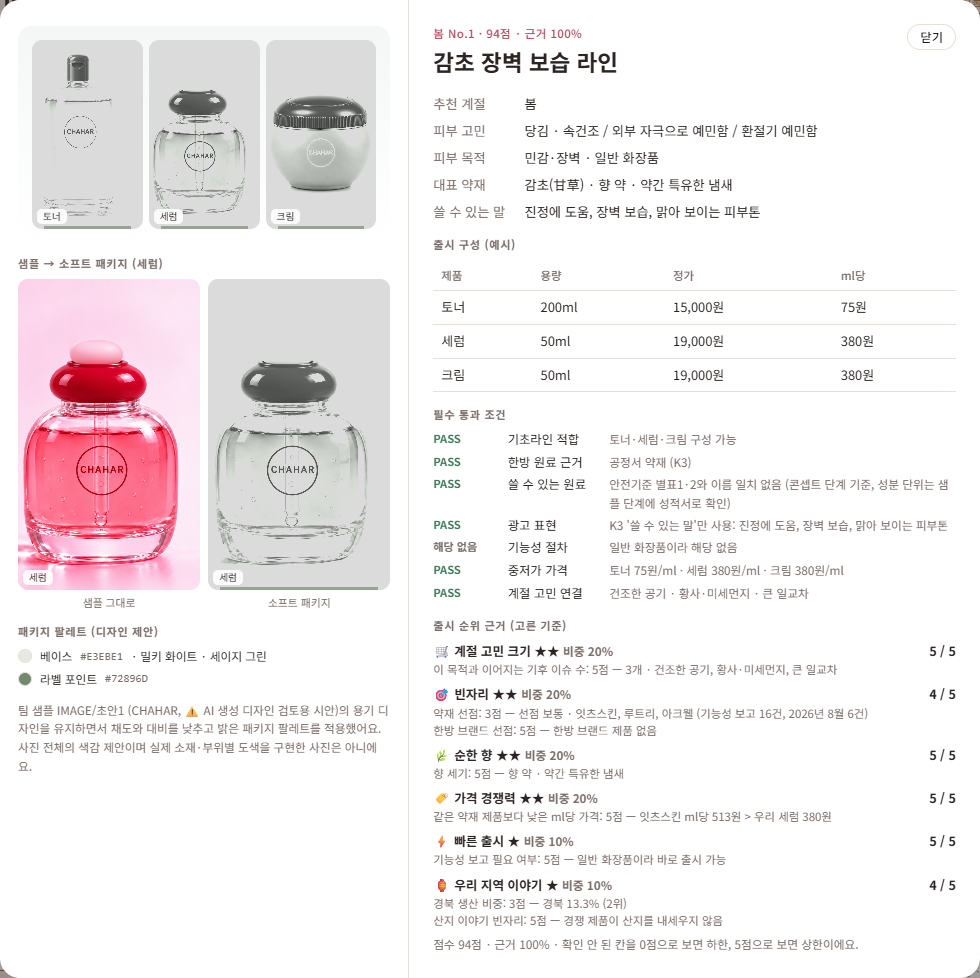
샘플에 밝은 팔레트를 적용한 소프트 패키지 미리보기
추천 원료와 제품 구성을 담은 제품 이미지까지 함께 출력
색은 디자인 콘셉트입니다. 실제 원료·제형의 색이나 시험 결과를 의미하지 않습니다.
기본 가중치의 비중
각 기준에서 확인하는 것
계절 기후 이슈 수와 피부 목적의 연결
약재 선점 + 한방 브랜드 선점 정도
조사한 원료의 향 세기
같은 약재 제품과 ml당 가격 비교
기능성 보고 필요 여부
경북 생산 비중 + 산지 이야기 빈자리
기준을 바꾸면 출시순위도 바뀝니다
점수와 함께 확인할 근거
미통과·확인 필요 후보는 순위에서 분리해 추가 검증합니다.
예: 80~100점, 근거 확보 80%처럼 불확실성을 함께 보여 줍니다.
수익성·핵심 효능·채널·고객 확보는 자료 확보 후 평가합니다.
발표 자료와 시연 출처